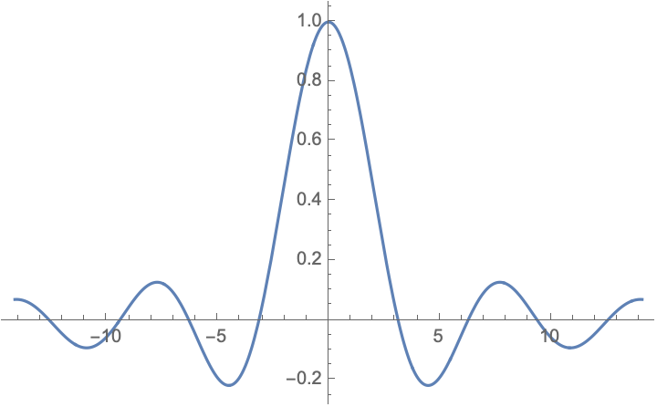

Lecture 1
信号的表示
- 数学表达式：一个或若干个自变量的函数或序列，如\(f(t)\)、\(x(n)=e^{-n}\)等
- 波形图：
- 画出函数随自变量的变化关系，典型的如时域波形图
- 频谱图等也是常用的表示信号的图像
典型信号
Sa函数
\[ Sa(t) = \frac{\sin t}{t} \]

特点：
- 偶函数
- \(Sa(k\pi) = 0, k\in\mathbb{Z}\)
- \(\int_{-\infty}^{+\infty}Sa(t)dt = \pi\)
- \(\int_{0}^{+\infty}Sa(t)dt = \int_{-\infty}^{0}Sa(t)dt = \frac{\pi}{2}\)
积分性质的证明
这个积分被称为Dirichlet integral，已经有众多巧妙的计算方法，请参考stackexchange。这里选取最容易理解的二元积分方法。
注意到：
\[\int_0^{+\infty} e^{-xy}\sin x dy = \frac{\sin x}{x}\]
因此我们有：
\[ \int_{0}^{+\infty}Sa(x)dx = \int_{0}^{+\infty} \left(\int_0^{+\infty} e^{-xy}\sin x dy\right)dx \]
交换积分顺序：
\[
\int_{0}^{+\infty} \left(\int_0^{+\infty} e^{-xy}\sin x dy\right)dx
=\int_{0}^{+\infty} \left(\int_0^{+\infty} e^{-xy}\sin x dx\right)dy
\]
由分部积分法：
\[\begin{align}
\int e^{-xy}\sin x dx &= -e^{-xy}\cos x - y\int e^{-xy}\cos x dx \\
&= -e^{-xy}\cos x - y\left(e^{-xy}\sin x+y\int e^{-xy}\sin xdx \right)
\end{align}\]
解得：
\[ \int e^{-xy}\sin x dx = \frac{-ye^{-xy}\sin x - e^{-xy}\cos x}{1+y^2} \]
因此：
\[ \int_0^{+\infty} e^{-xy}\sin x dx = \frac{1}{1+y^2} \]
最后：
\[ \int_{0}^{+\infty}Sa(x)dx = \int_0^{+\infty}\frac{1}{1+y^2}dy = \arctan y |_0^{+\infty} = \frac{\pi}{2} \]
指数信号
\[ f(t) = Ke^{\alpha t} \]
信号的分类
- 按分布性质
- 确定性信号
- 随机性信号
- 连续性
- 连续时间信号(Continuous-Time Signal)
- 离散时间信号(Discrete-Time Signal)
- 因果性
- 因果信号：\(t<0\Rightarrow x(t)=0\)
- 非因果信号
- 反因果信号：\(t>0\Rightarrow x(t)=0\)
- 周期性
- 实值信号与复值信号
信号的基本运算
- 普通四则运算
- 波形变化
- 时移运算：\(f(t-a)\)
- 压扩运算：\(f(kt)\)
- 反褶运算：\(f(-t)\)
- 积分与微分
- 能量与功率
- 瞬时功率：\(||f(t)||^2\)
- 能量：
- 连续：\(E[f(t)]=\int_{-\infty}^{+\infty} ||f(t)||^2 dt\)
- 离散：\(E[x(n)]=\sum_{n=-\infty}^{+\infty} ||x(n)||^2\)
- 平均功率：
- 连续：\(P[f(t)]=\lim_{T\to \infty}\frac{1}{T}\int_{-T/2}^{+T/2} ||f(t)||^2 dt\)
- 离散：\(P[x(n)]=\lim_{N\to \infty}\frac{1}{2N+1}\sum_{n=-N}^{N} ||x(n)||^2\)
- 据此也可分类信号
- 能量信号：均收敛
- 功率信号：无穷能量+有限功率
- 非能非功信号：均不收敛
- 卷积（在下一讲）
欧拉公式与复指数信号
欧拉公式
\[ e^{ix}=\cos x + i\cdot\sin x \]
欧拉公式的证明
这个著名的公式也有相当多的证明方法。课件上列举了两种，而且课后作业正是让我们找到第三种方法。参考维基百科来获得更多信息，这里列举上面的第一种方法。
考虑函数
\[ f(\theta) = \frac{\cos\theta + i\sin\theta}{e^{i\theta}} = e^{-i\theta}(\cos\theta + i\sin\theta) \]
若要证明欧拉公式，只需要证明函数\(f(\theta)\)恒为1。
将其微分，可得：
\[ f'(\theta) = e^{-i\theta}(i\cos\theta - \sin\theta) - ie^{-i\theta}(\cos\theta + i\sin\theta) = 0 \]
而又恰好\( f(0) = 1 \)。因此
\[ f(\theta) = \frac{\cos\theta + i\sin\theta}{e^{i\theta}} \equiv 1 \]
\[ e^{ix}=\cos x + i\cdot\sin x \]
复指数信号
\[ f(t) = Ke^{st} \]
其中\(s\)为复数，可以写为\(s=\sigma+i\omega, \sigma,\omega\in\mathbb{R}\)。根据欧拉公式，我们有：
\[ f(t) = Ke^{\sigma t}\cdot(\cos\omega t+i\sin\omega t) \]